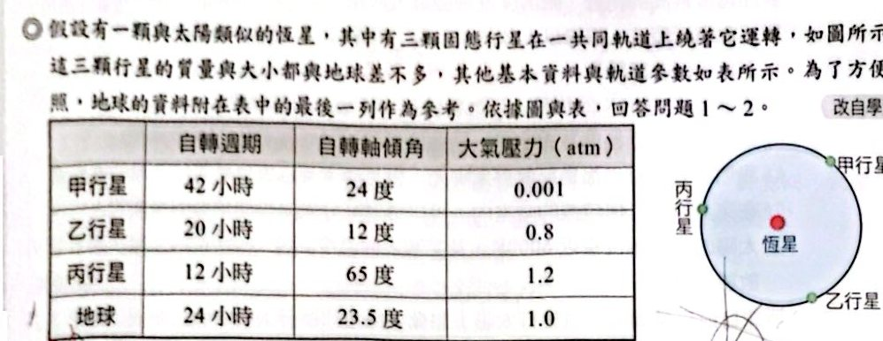
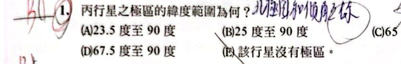
看答案與詳解收起
答(B) 25 度至 90 度
解
這題在考什麼：極圈緯度＝90° − 自轉軸傾角。丙行星傾角 65° ⇒ 極圈緯度＝90 − 65＝25°，極區範圍是 25°～90°。


這題在考什麼：極圈緯度＝90° − 自轉軸傾角。丙行星傾角 65° ⇒ 極圈緯度＝90 − 65＝25°，極區範圍是 25°～90°。
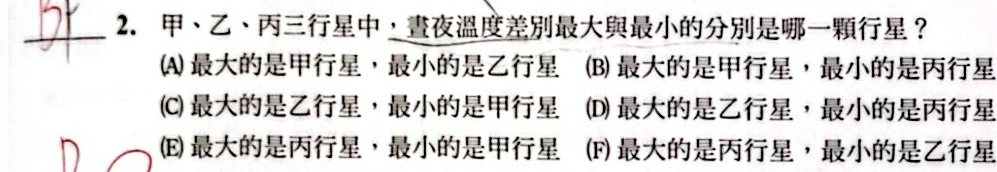
這題在考什麼：晝夜溫差與大氣厚度（恆溫效果）、自轉週期（日照時間長短）有關：大氣愈稀薄、自轉愈慢，溫差愈大。
- 甲：大氣壓力 0.001 atm（極稀薄）、自轉 42 小時（最慢）⇒ 溫差最大。
- 丙：大氣壓力 1.2 atm（最厚）、自轉 12 小時（最快）⇒ 溫差最小。
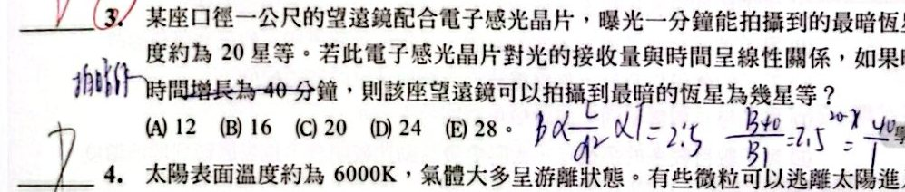
這題在考什麼：感光晶片接收光量與曝光時間成線性關係，曝光時間變 40 倍 ⇒ 能接收的光量變 40 倍，等於能偵測到暗 2.512ⁿ＝40 倍的星。
- 2.512⁴ ≈ 39.8 ≈ 40 ⇒ n ＝ 4 等。
- 極限星等由 20 等 ⇒ 24 等。
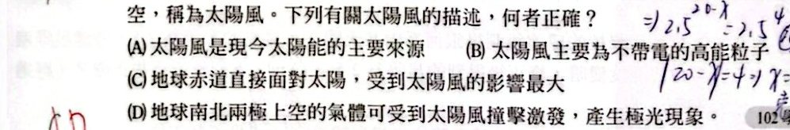
這題在考什麼：太陽風是由太陽噴出的帶電粒子（質子、氦原子核與電子）。
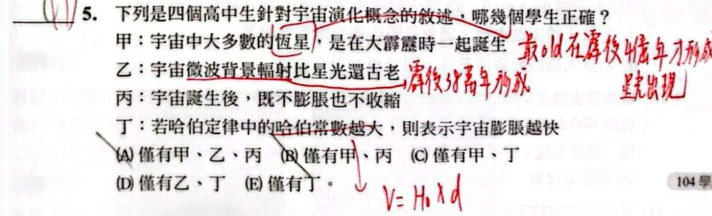
這題在考什麼：
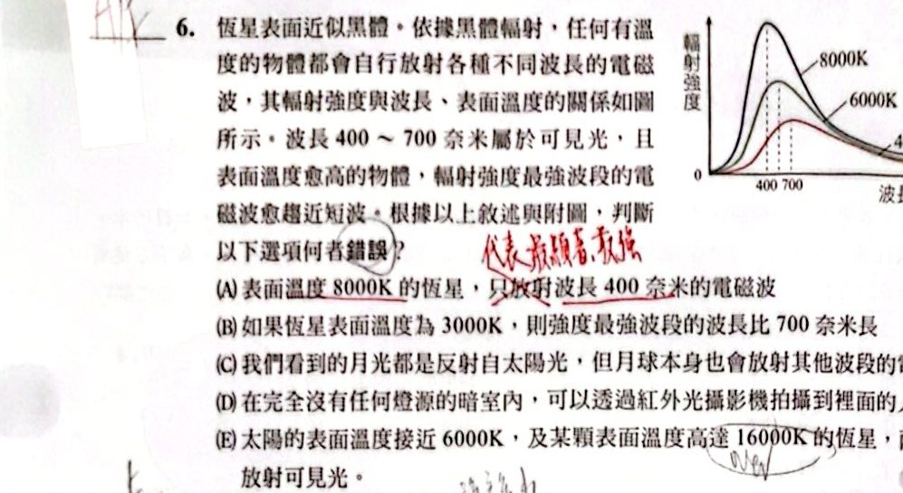
這題在考什麼：黑體輻射曲線：任何溫度的物體都會放出各種波長，只是強度不同；溫度愈高，最強波段的波長愈短。
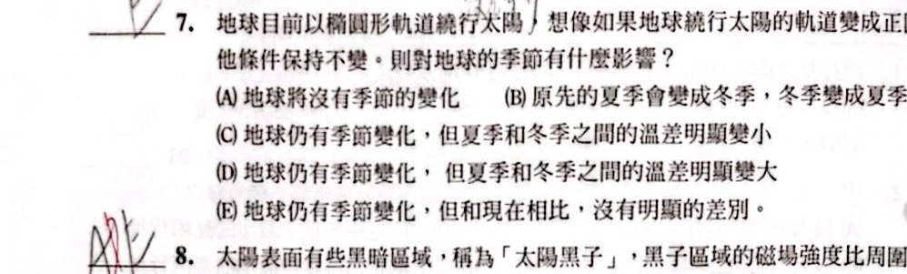
這題在考什麼：季節變化主要由地軸傾斜造成，所以仍有季節。目前北半球夏季在遠日點附近、冬季在近日點附近，使北半球夏冬溫差被「稍微縮小」；若軌道變成正圓，這個縮小作用消失，夏冬溫差變得更大。
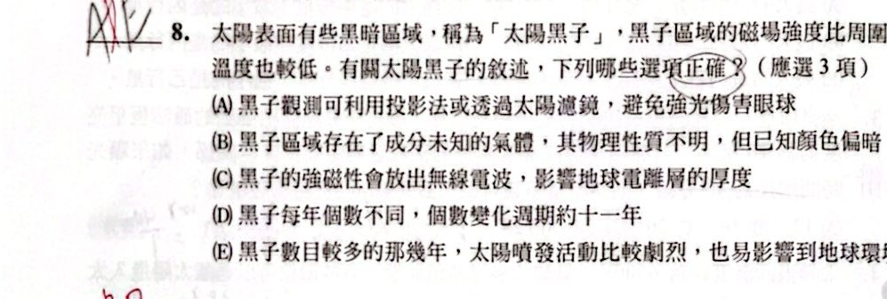
這題在考什麼：太陽黑子（光球層上較低溫的暗區），數量約 11 年為一個週期，黑子多＝太陽活動劇烈。
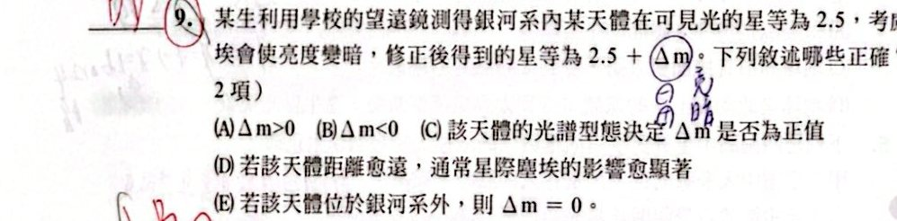
這題在考什麼：星際塵埃使星光變暗 ⇒ 觀測到的星等偏大；修正後（還原應有亮度）的星等要變小，所以 Δm＜0。
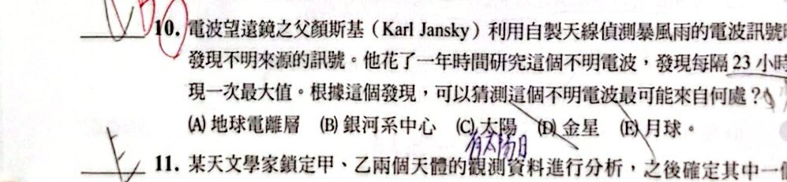
這題在考什麼：訊號每隔 23 小時 56 分（＝1 個恆星日）出現一次最大值，代表訊號源固定在天球上，隨地球自轉每恆星日經過一次；太陽（太陽日 24 小時）、金星、月球都不是。固定在天球上的訊號源就是銀河系中心（射電波很強）。
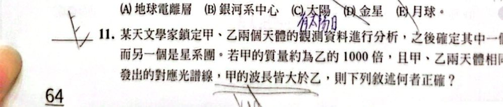
這題在考什麼：甲質量約乙的 1000 倍 ⇒ 甲是星系團、乙是星系；甲光譜線波長皆大於乙 ⇒ 甲紅移較大 ⇒ 遠離速率較大（距離較遠）。
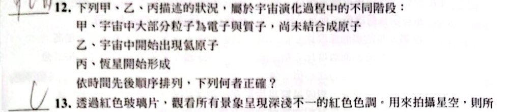
這題在考什麼：
- 甲：宇宙中大部分粒子為電子與質子，尚未結合成原子（大霹靂後 38 萬年前）。
- 乙：宇宙中開始出現氫原子（約 38 萬年後，離子結合成原子）。
- 丙：恆星開始形成（約 4 億年後）。
順序：甲 → 乙 → 丙。
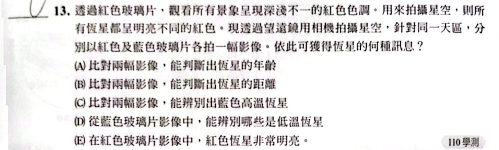
這題在考什麼：紅色玻璃片只讓紅光通過，藍色玻璃片只讓藍光通過。藍色（高溫）恆星在藍色玻璃片影像中很亮、在紅色玻璃片影像中很暗；比對兩幅影像的亮度差，就能辨別星色（表面溫度）。
- (A)(B) 不能判斷年齡、距離。(D) 藍色玻璃片中亮的是高溫恆星，不是低溫恆星。(E) 在紅色玻璃片中亮的是紅色低溫恆星，但敘述「非常明亮」不是重點，也不是題意要找的資訊。
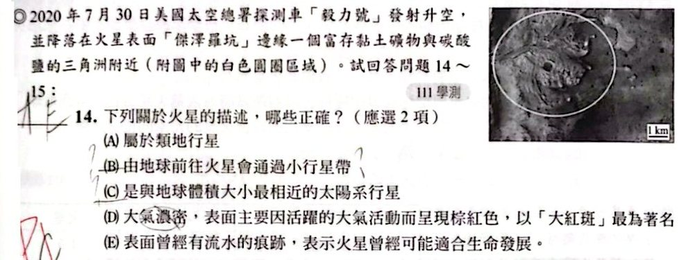
這題在考什麼：火星的特徵：類地行星、有流水痕跡。
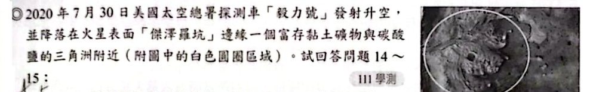
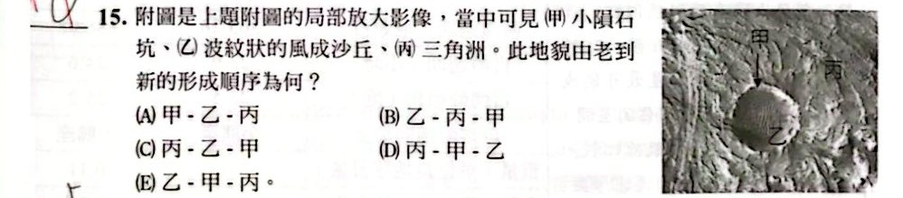
這題在考什麼：地貌判斷相對年代（疊置、截切）：三角洲（流水沉積，最老）→ 小隕石坑（在三角洲上切入）→ 風成沙丘（覆蓋在隕石坑上，最新）。順序：丙 → 甲 → 乙。
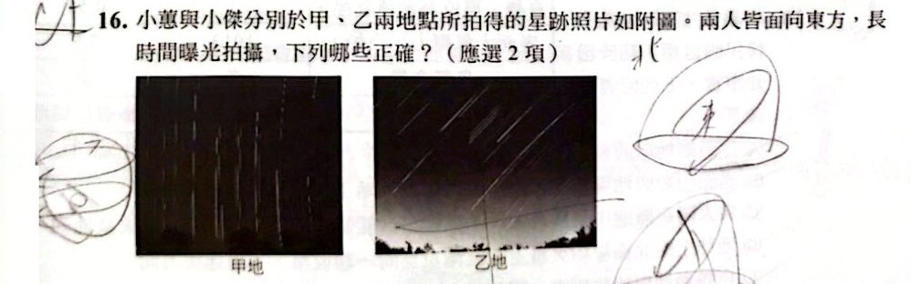
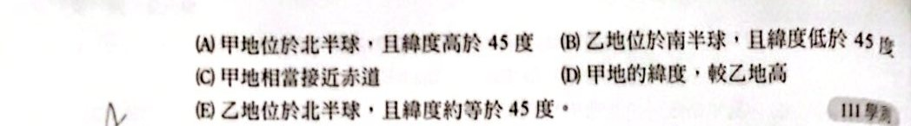
這題在考什麼：朝東拍攝的星跡是直線；軌跡與地平面的夾角＝90° − 緯度。
- 甲地：星跡幾乎垂直地平面 ⇒ 夾角約 90° ⇒ 緯度約 0° ⇒ 甲地相當接近赤道 ⇒ (C) ○。
- 乙地：星跡與地平面夾角約 45° ⇒ 緯度約 45°，且星體往右上方移動（朝東看、右側為南）⇒ 乙地位於北半球，緯度約等於 45 度 ⇒ (E) ○。
- (A)(B)(D) ✗。
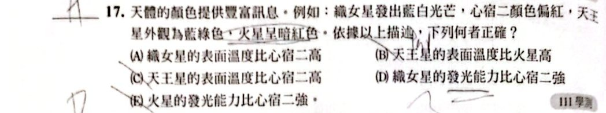
這題在考什麼：顏色對應表面溫度：藍白色（織女星）＞偏紅（心宿二）；行星的顏色與表面組成有關，不能以此比較溫度。
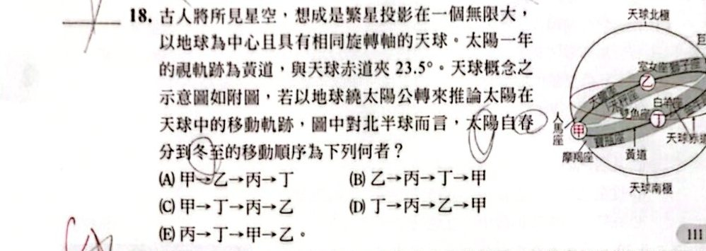
這題在考什麼：太陽在黃道上的位置：
- 丁：在天球赤道上、白羊座附近 ⇒ 春分點
- 丙：在黃道最北、巨蟹座附近 ⇒ 夏至點
- 乙：在天球赤道上、室女座附近 ⇒ 秋分點
- 甲：在黃道最南、人馬座附近 ⇒ 冬至點
春分→夏至→秋分→冬至：丁→丙→乙→甲。
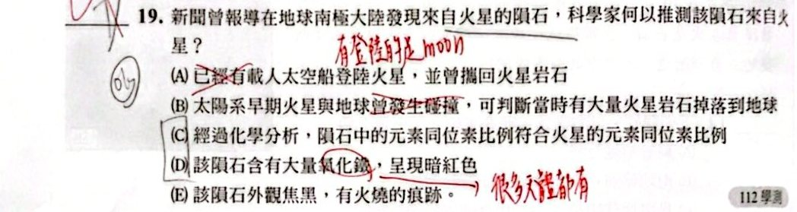
這題在考什麼：判斷隕石來源要靠成分分析：元素與同位素比例符合火星。
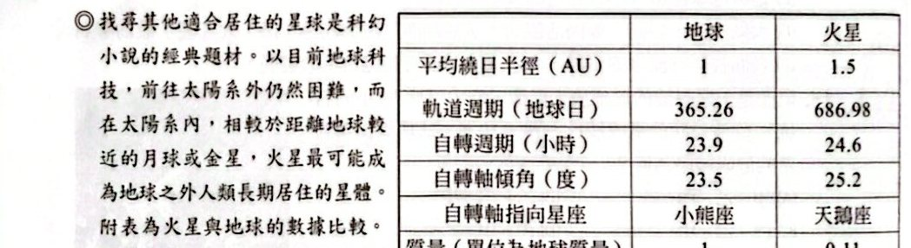
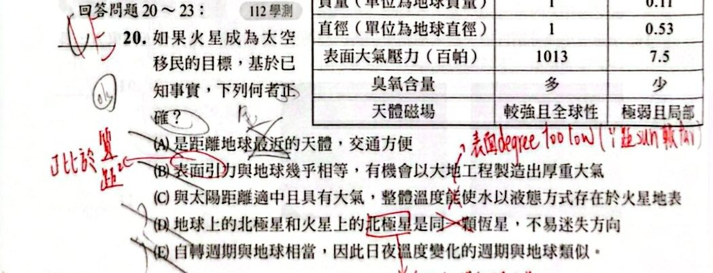
這題在考什麼：火星與地球的比較（表）。
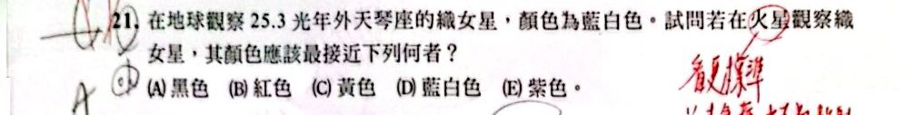
這題在考什麼：恆星的顏色由表面溫度決定，與觀測位置無關；火星大氣稀薄，更少散射，看得更清楚。織女星仍呈藍白色。
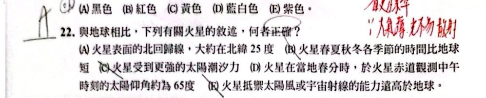
這題在考什麼：火星自轉軸傾角 25.2° ⇒ 北回歸線約在北緯 25 度。
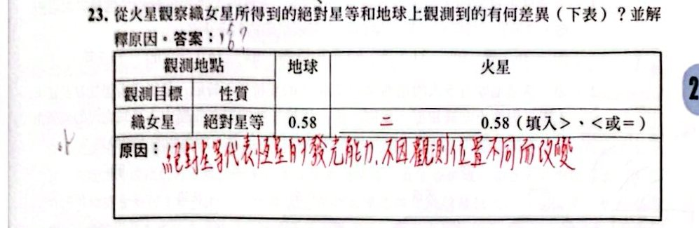
這題在考什麼：絕對星等＝把星體移到 32.6 光年處所得的亮度星等，代表恆星本身的發光能力，不會因為觀測位置不同而改變。所以從火星看織女星的絕對星等與地球上觀察的相同，填「＝」。
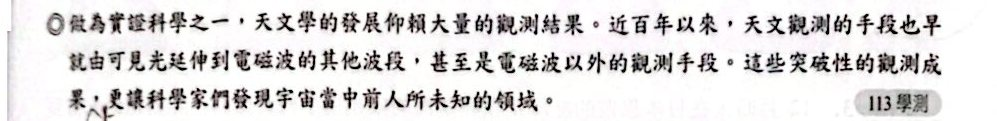
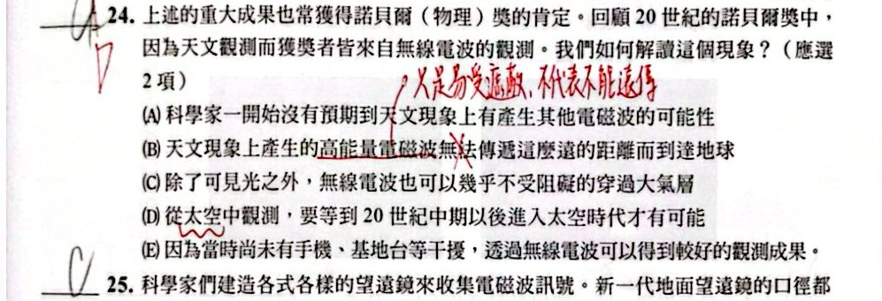
這題在考什麼：二十世紀天文觀測諾貝爾獎都來自無線電波，因為它能穿過大氣窗。
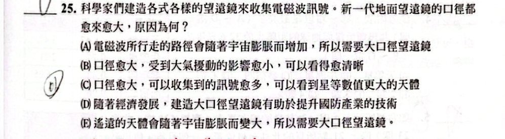
這題在考什麼：望遠鏡集光力與口徑²成正比：口徑愈大，收集到的訊號愈多，能看到星等數值更大（更暗）的天體。
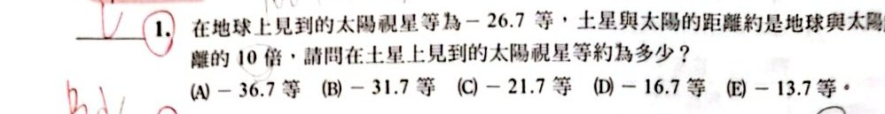
這題在考什麼：土星距太陽約為地球的 10 倍 ⇒ 亮度變 1/100 ⇒ 視星等增加 5 等：−26.7 ＋ 5 ＝ −21.7。
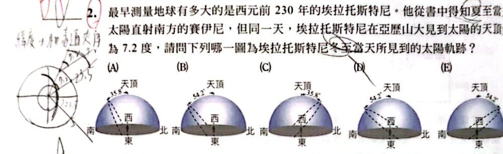
這題在考什麼：亞歷山大港夏至時太陽天頂角 7.2°（賽伊尼直射回歸線，亞歷山大港在其北方）。
- 夏至太陽位於天頂偏南 7.2°。
- 冬至太陽比夏至再偏南 23.5° × 2＝47°，天頂角＝7.2° ＋ 47° ＝ 54.2°（偏南）。
- 正午太陽仰角＝90° − 54.2° ＝ 35.8°。
圖中左為南，所以選天頂角 54.2° 偏南的 (D)。
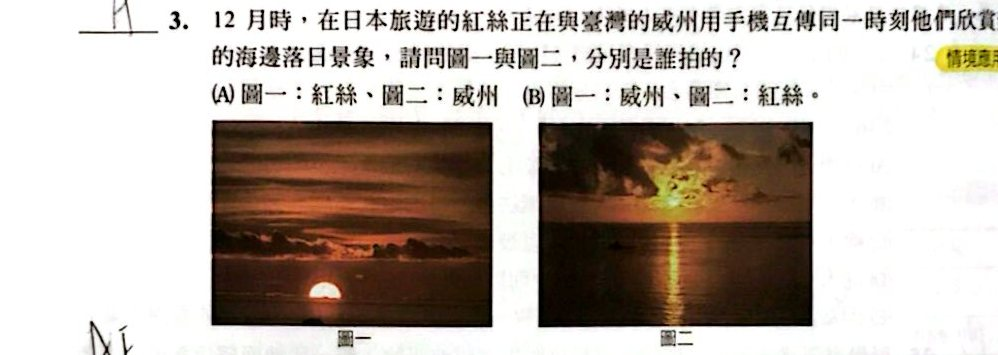
這題在考什麼：同一時刻，較東邊的地點時間較晚（日本比臺灣東）。同一時刻，日本的太陽已經更接近地平線（落下較多）⇒ 圖一（太陽快落完）是日本的紅絲；圖二（太陽還在較高處）是臺灣的威州。
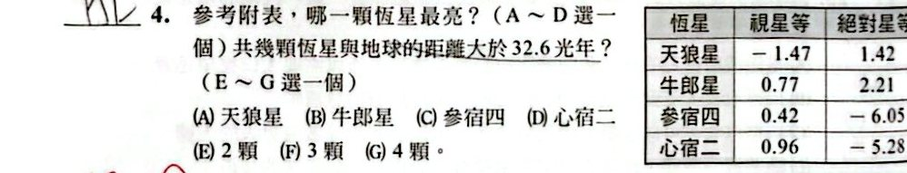
這題在考什麼：看起來最亮＝視星等最小；距離判斷用 m 與 M 比較。
| 恆星 | m | M | m 與 M | 距離 |
|---|---|---|---|---|
| 天狼星 | −1.47 | 1.42 | m＜M | ＜32.6 光年 |
| 牛郎星 | 0.77 | 2.21 | m＜M | ＜32.6 光年 |
| 參宿四 | 0.42 | −6.05 | m＞M | ＞32.6 光年 |
| 心宿二 | 0.96 | −5.28 | m＞M | ＞32.6 光年 |
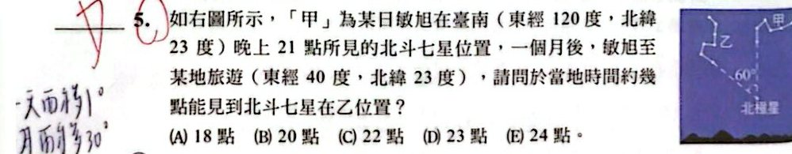
這題在考什麼：地方時相同的位置星空相同，經度差異不影響問題的星空判斷（一個月後同一地方時的星空相同）。
這題在考什麼：極光是帶電粒子沿磁力線進入高緯度大氣層，撞擊高層大氣所產生。
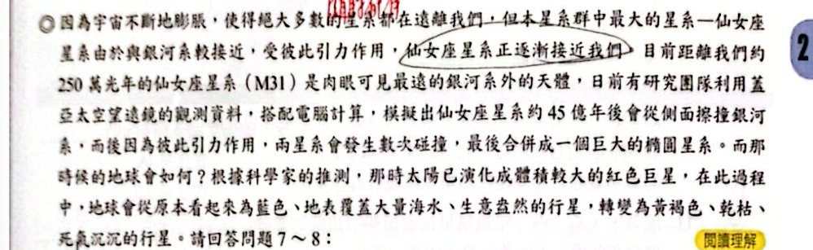
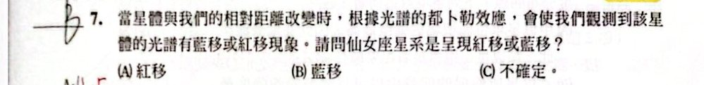
這題在考什麼：仙女座星系正在靠近銀河系 ⇒ 光譜藍移（波長變短）。
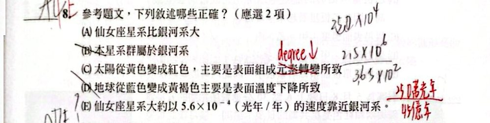
這題在考什麼：
- (A) ○ 仙女座星系是本星系群中最大的星系，比銀河系大。
- (B) ✗ 本星系群包含銀河系，本星系群不屬於銀河系。
- (C) ✗ 太陽從黃色變紅色是表面溫度下降，不是組成元素改變。
- (D) ✗ 地球由藍色變黃褐色是因為海洋消失、地表乾枯，不是表面溫度下降。
- (E) ○ 靠近速度＝距離÷時間＝250 萬光年 ÷ 45 億年 ≈ 5.6×10⁻⁴ 光年／年。
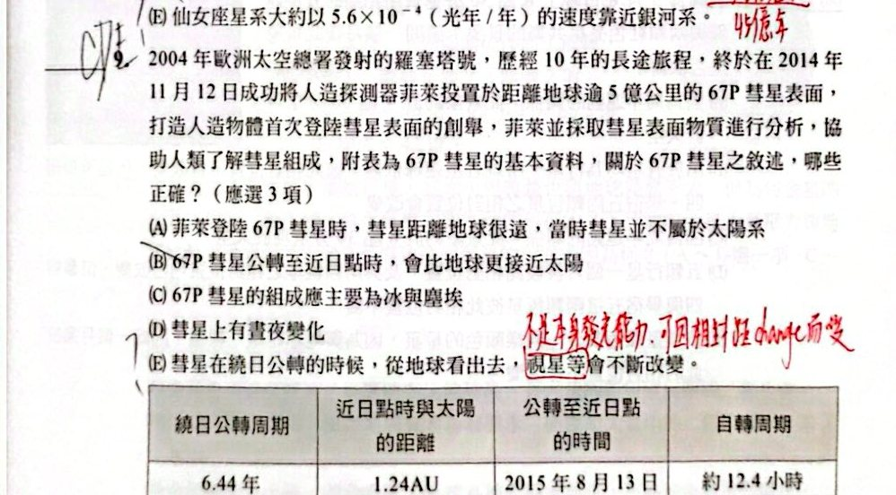
這題在考什麼：彗星（太陽系小天體）。
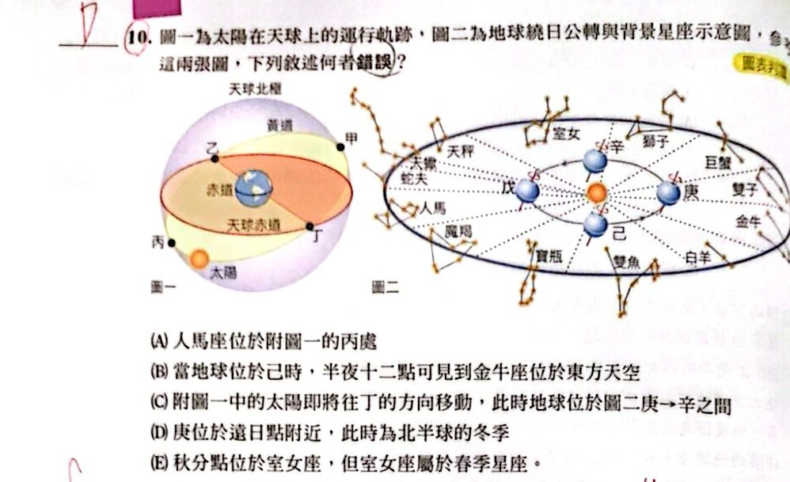
這題在考什麼：圖一為太陽在天球上的位置（甲～丁），圖二為地球公轉與背景星座（庚為地球公轉軌道右側位置）。
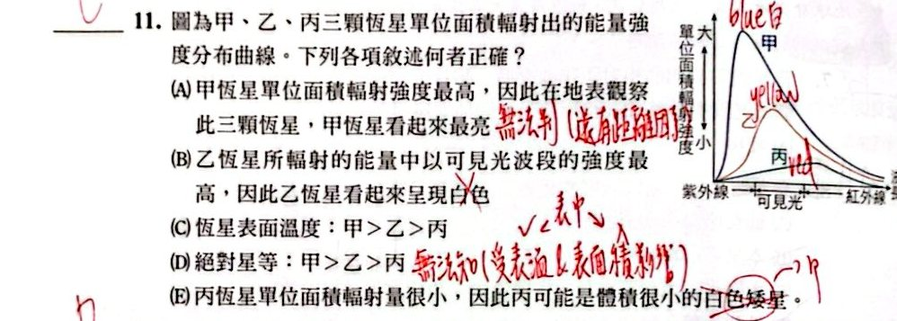
這題在考什麼：單位面積輻射曲線：溫度愈高，曲線愈高、峰值波長愈短。
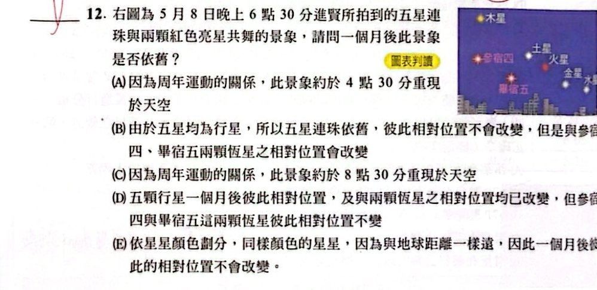
這題在考什麼：行星相對背景恆星位置會改變，行星之間也因公轉速度不同而改變相對位置；恆星彼此位置固定。
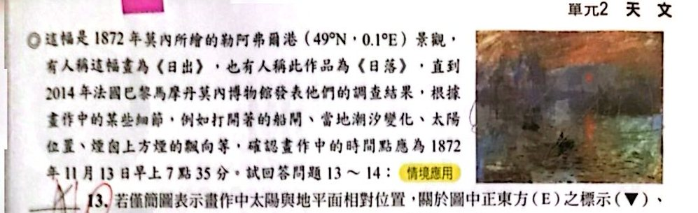
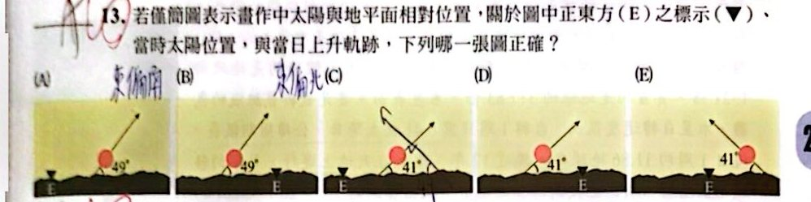
這題在考什麼：勒阿弗爾位於北緯 49°：太陽軌跡與地平面的夾角＝90° − 49°＝41°；11 月太陽直射南半球，日出方位東偏南。
這題在考什麼：11 月（直射南半球）→ 隔 6 個月＝5 月（直射北半球）：太陽升起方位偏北（面向東，北在左）、同一時刻仰角較高（太陽較早升起）⇒ 位於原位置的左上方。
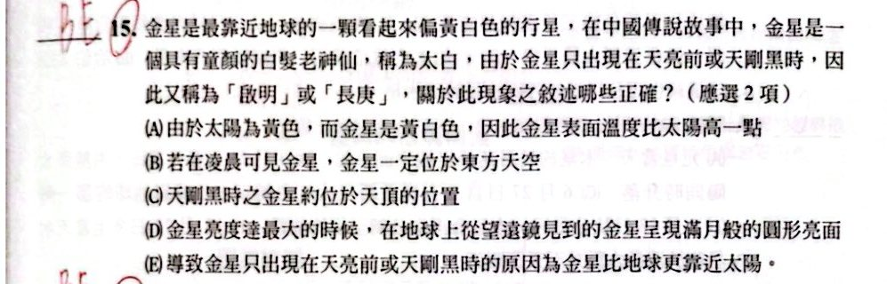
這題在考什麼：金星的軌道在地球內側，最大角距離只有約 47°，所以只出現在日出前（東方）或日落後（西方）。
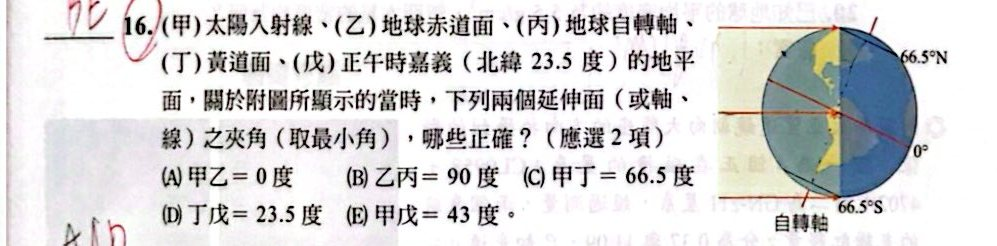
這題在考什麼：圖為冬至（直射南回歸線）。
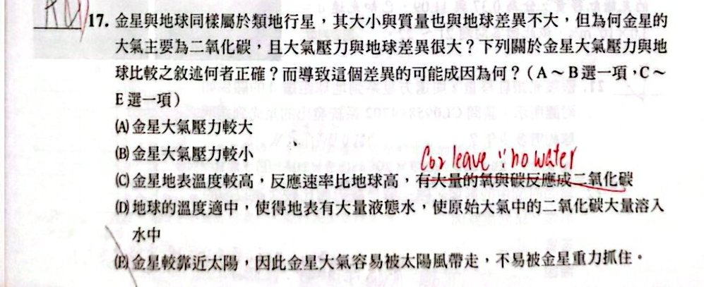
這題在考什麼：金星大氣壓力是地球的約 90 倍；金星的大氣以 CO₂ 為主。地球有大量液態水，CO₂ 大量溶入水中（再形成石灰岩），使大氣 CO₂ 少；金星太熱，沒有液態水，CO₂ 留在大氣中。
- (A) ○ 金星大氣壓力較大。
- (B) ✗。
- (C) ✗ 溫度高確實反應速率較快，但不是主因（也沒有大量碳反應成 CO₂ 的證據）。
- (D) ○ 地球的溫度適中，使地表有大量液態水，使原始大氣中的 CO₂ 大量溶入水中。
- (E) ✗ 大氣被太陽風帶走與否不是壓力差異的主因（金星重力足以抓住大氣）。
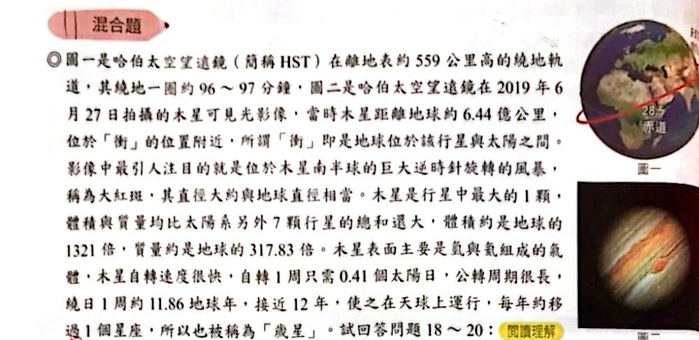
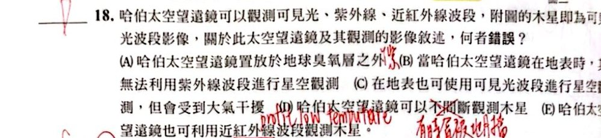
這題在考什麼：哈伯太空望遠鏡位在地球大氣層外（約 559 公里），繞地一圈約 96～97 分鐘。
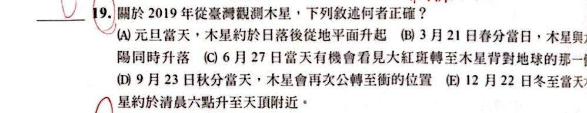
這題在考什麼：6 月 27 日木星位於「衝」（地球在太陽與木星之間）⇒ 木星整夜可見，與太陽相反方向（太陽日落時木星升起、半夜中天）。
這題在考什麼：密度＝質量／體積。木星質量是地球的 317.83 倍，體積是地球的 1321 倍 ⇒ 密度＝5.5 × 317.83／1321 ≈ 1.32 g/cm³。
這題在考什麼：圖中紅移量 z＝0.37 對應距離約 5000 百萬光年＝5×10⁹ 光年 ⇒ 星光到地球需要約 5×10⁹ 年（光走 1 光年需 1 年）。
這題在考什麼：根據哈伯定律，距離愈遠的天體，遠離速度愈快，紅移量愈大。圖二 GN-z11 的紅移 z＝11.09（圖一 0.37）⇒ 距離更遠，星光傳到地球所需時間愈長，看到的是更久遠以前的影像。